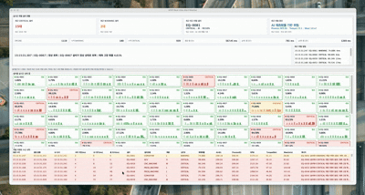
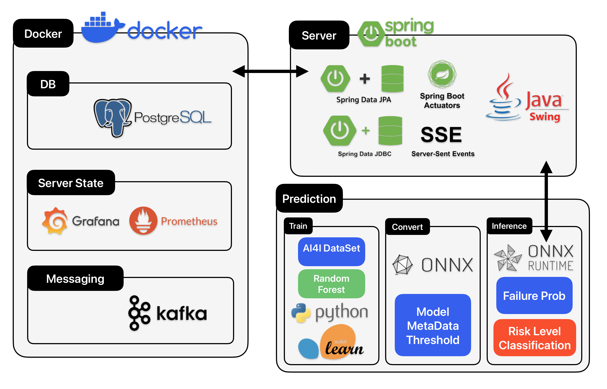
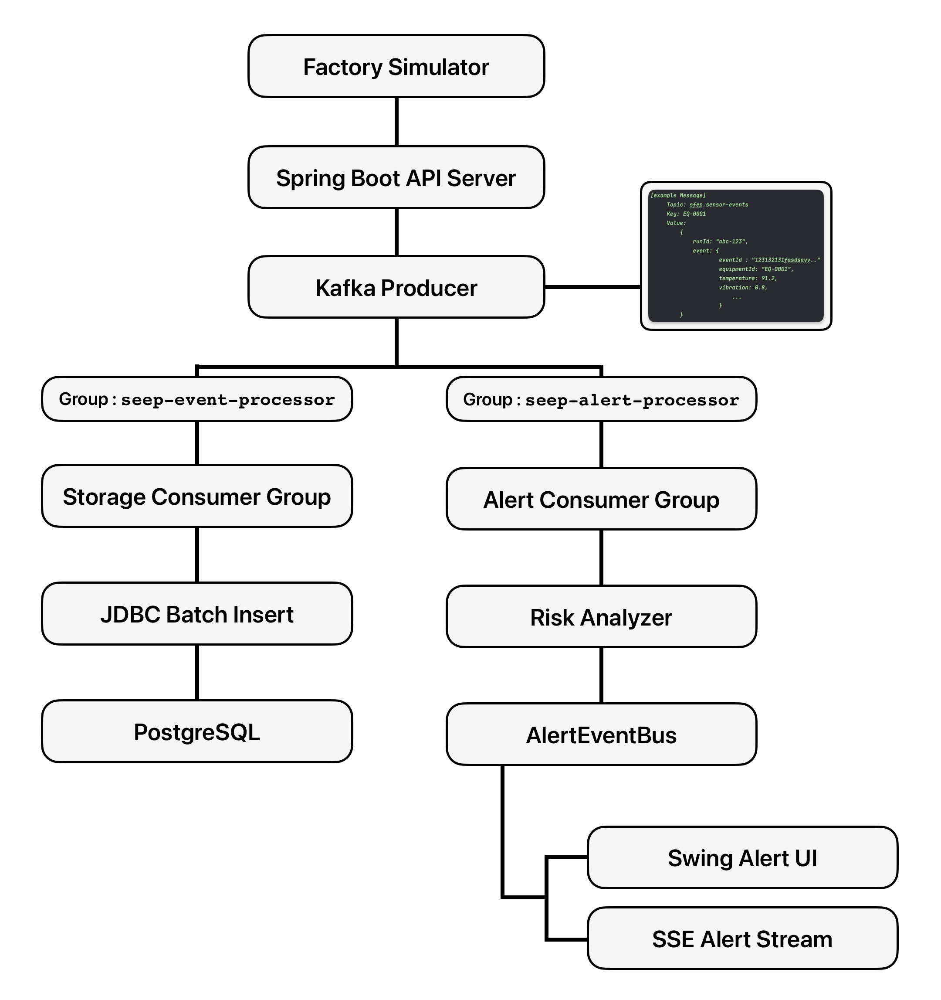
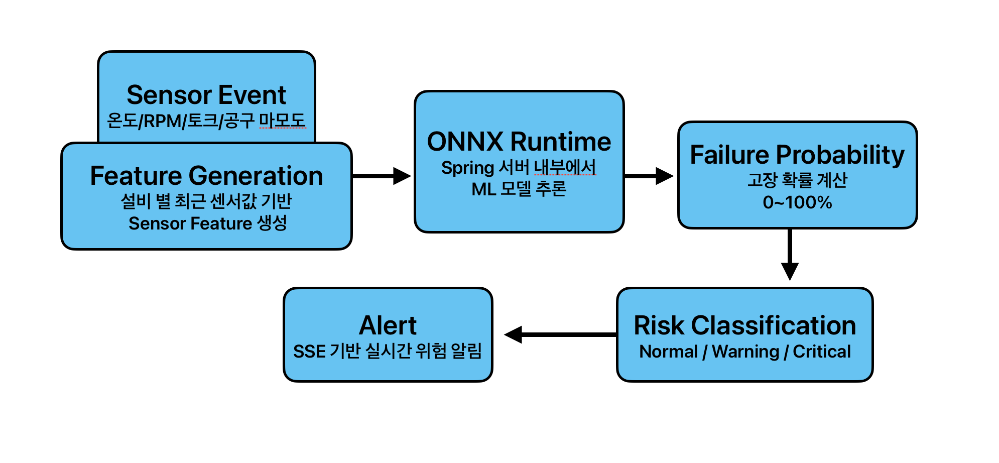

개요
제조 설비는 여러 센서 데이터를 지속적으로 생성하고, 단순 임계값 기반 판단만으로는 복합 상태와 시간 흐름을 반영한 조기 고장 예측 이 어렵습니다.
설비 이벤트를 Kafka 기반 Event-Driven Architecture 로 처리하고, AI4I 제조 설비 데이터를 기반으로 이상 예지 모델을 학습했습니다.
학습 모델을 ONNX 형태로 Spring 서버에 통합해 Failure Probability 기반 설비별 고장 확률을 실시간 예측 하도록 구성했습니다.
역할 및 핵심 성과
-
01
Spring Boot 기반 이벤트 처리 백엔드 설계와 대규모 설비 이벤트 생성 시뮬레이터 구현
-
02
Kafka 기반 수집/저장 분리와 Batch Insert 적용으로 100,000건 53,611ms -> 1,849ms 개선
-
03
Consumer Group 병렬 처리 구조 설계로 최대 50,000 events/sec 처리 확인
-
04
저장 Consumer와 Alert Consumer 분리로 p95 알림 지연 6,959ms -> 1,926ms 개선
-
05
AI4I 데이터 기반 고장 예측 모델 학습 및 ONNX Runtime Spring 서버 실시간 추론 연동
-
06
고장 예측 모델 F1-score 0.8889 / ROC-AUC 0.9740 달성과 Prometheus/Grafana 모니터링 구성
프로젝트 기능 및 시연

Swing 기반 시뮬레이터로 설비 수, 설비당 이벤트 수, 장애 비율을 직접 설정해 가상 설비 이벤트를 생성합니다.

일정 시간 동안 지속적으로 이벤트를 발생시켜 운영 환경과 유사한 지속 트래픽 처리 안정성을 확인합니다.

설비별 최근 50개 이벤트로 52개 Feature를 생성하고 ONNX 모델로 고장 확률을 예측해 위험 상태를 표시합니다.

HTTP 요청, 평균 응답 시간, JVM 메모리, Hikari DB Connection, CPU 사용량을 대시보드에서 확인합니다.
시스템 아키텍처



기술 스택
Backend
API 서버, 이벤트 처리, 모델 추론 연동
Messaging
설비 이벤트 수집과 실시간 알림 흐름
AI / Model
고장 확률 예측 모델 학습과 서버 통합
Database
센서 이벤트 저장과 조회 기반
Monitoring
처리량, 지연 시간, 서버 상태 추적
Infra / Tools
로컬 실행 환경과 형상 관리
개선 사항
Direct DB Write 구조에서 발생한 저장 병목
상황 1- 시뮬레이터 이벤트를 Spring 서버가 PostgreSQL에 직접 저장
- 대량 이벤트 유입 시 요청 처리와 DB 저장이 강하게 결합
- 100,000건 처리 기준 53,611ms 소요, 처리율 933 events/sec 수준
- Kafka 기반으로 이벤트 수집과 저장 흐름 분리
- Consumer가 이벤트를 비동기로 처리하고 Batch Insert 적용
- 처리 시간 96.5% 감소, 저장 처리율 기존 대비 약 2,800% 향상
| 방식 | 처리 시간 | 처리율 |
|---|---|---|
| Direct DB Write | 53,611ms | 933 events/sec |
| Batch Insert | 1,849ms | 27,056 events/sec |
Kafka 기반 수집/저장 분리와 Batch Insert 적용으로 100,000건 이벤트 처리 시간을 96.5% 줄이고 저장 처리율을 약 2,800% 향상했습니다.
단일 Consumer 처리 구조의 처리량 한계
상황 2- Kafka를 도입해도 Consumer가 단일 처리 구조이면 이벤트 처리 속도에 한계
- 이벤트 생산 속도가 소비 속도보다 빨라지면 Consumer Lag 증가
- Topic에 이벤트가 쌓이며 실시간 처리성이 떨어질 가능성
- Kafka Topic Partition을 6개로 구성
- Consumer Concurrency 3 기반 병렬 처리 구조 적용
- max.poll.records, Batch Size, Hikari Connection Pool 설정을 조합하며 처리량 실험
Kafka Consumer 병렬화 후 최대 50,000 events/sec 수준의 처리량을 확인했습니다.
저장 처리와 위험 알림 처리가 같은 흐름에 묶이는 문제
상황 3- 위험 이벤트 알림이 DB 저장 흐름에 함께 묶인 구조
- DB 저장이 느려지는 순간 알림 전달도 함께 지연
- 설비 과열, 진동 이상, 전류 급증 이벤트는 저장보다 빠른 운영자 인지가 중요
- Kafka Consumer Group을 저장 Consumer와 알림 Consumer로 분리
- 동일 센서 이벤트를 저장/알림 Consumer가 각각 독립적으로 소비
- AlertEventBus와 별도 Thread Pool 기반 비동기 알림 처리
| 항목 | p95 알림 지연 |
|---|---|
| 저장 흐름 중심 처리 | 6,959ms |
| Alert Consumer 분리 후 | 1,926ms |
Alert Consumer 분리 후 p95 알림 지연 시간을 72% 단축했습니다.
Rule-Based 위험 판단의 한계
상황 4- 초기 위험 판단은 온도, 진동, 토크 등 단일 임계치 기반 Rule-Based 방식
- 제조 설비 고장 위험은 여러 센서 값의 조합과 최근 변화 흐름을 함께 봐야 하는 특성
- 단일 값 기준 판단만으로는 복합적인 이상 징후를 포착하기 어려운 한계
- AI4I 2020 Predictive Maintenance Dataset 기반 고장 예측 모델 학습
- 설비별 최근 50개 이벤트를 Rolling Window로 관리하고 52개 Feature 생성
- Spring 서버에서 ONNX Runtime으로 모델을 직접 로드해 실시간 failure_probability 계산
| 항목 | 값 |
|---|---|
| Accuracy | 0.9930 |
| 고장 Precision | 0.9655 |
| 고장 Recall | 0.8235 |
| 고장 F1-score | 0.8889 |
| ROC-AUC | 0.9740 |
| PR-AUC | 0.9088 |
Rule-Based 판단을 모델 추론 구조로 확장해 고장 예측 F1-score 0.8889, ROC-AUC 0.9740을 달성했습니다.
성능 개선 실험을 검증할 운영 지표 부족
상황 5- 초기 성능 측정은 Swing UI의 처리 시간과 서버 로그 중심
- 전체 처리 시간과 초당 처리율은 확인 가능
- 처리 중 서버 내부의 CPU, JVM, DB Connection 병목은 파악하기 어려운 상태
- Spring Actuator, Prometheus, Grafana 도입
- /actuator/prometheus 엔드포인트로 JVM, HTTP 요청, DB Connection, CPU 사용량 메트릭 노출
- Grafana 대시보드에서 대량 이벤트 처리 실험 중 자원 사용량 확인
Prometheus/Grafana 기반 운영 지표로 성능 개선 실험 중 서버 내부 병목을 함께 추적할 수 있게 했습니다.
회고
Performance Optimization
병목 지점을 수치로 분석한 후 단계적으로 구조를 변경하며 성능을 개선하는 과정의 중요성 을 확인했습니다.
Event-Driven Architecture
Kafka 기반 이벤트 처리 구조와 AI4I 기반 제조 설비 데이터셋을 활용하여 실시간성과 확장성을 고려한 시스템 설계 를 경험할 수 있었습니다.